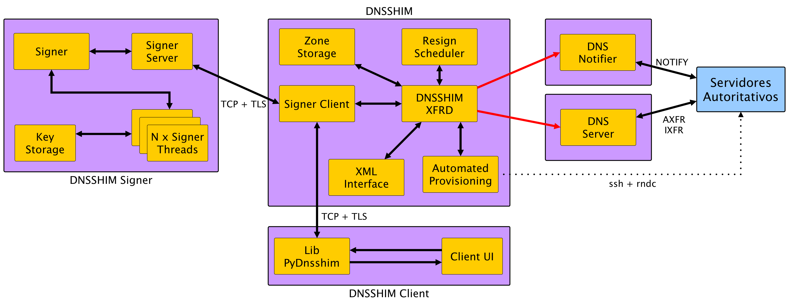

arquitetura de um servidor dns
hidden master
DevInSampa 2012

David Robert
Vamos fala sobre...
- Servidor DNS ??
- Hidden Master ??
- Multiplas Zonas ??
DNS
devinsampa.com.br. ↔ 207.97.227.245
- Arquitetura hierárquica - árvore invertida
- Descentralizado e distribuído
- Mais funcionalidades do que só
domínio↔IP
Domínio X Zona
Tipos de Servidores
-
Servidor Autoritativo
- - Responde com autoridade para uma zona
- - Deve estar disponível publicamente para internet
- - Podem ser do tipo Master ou Slave
-
Servidor Recursivo
- - Não é responsável por uma única zona
- - Ao receber uma requisição, consulta servidores autoritativos para obter a informação desejada
- - Faz cache de informações
- - Pode ter acesso controlado
Servidores Master e Slave
Servidor Master
- - Contém a configuração da zona pela qual é responsável
- - A cada alteração, as novas informações são propagadas para os servidores Slaves
Hidden Master (Master oculto)
- - Tipo específico de Master que não é visível na internet
Servidor Slave
- - Apenas obtém a configuração da zona do servidor Master
Fluxo de Dados

Vulnerabilidades

Dan Kaminsky
DNSSEC
Motivação
- Complexidade na implementação e manutenção de DNSSEC
- Gradual adoção de DNSSEC pelo mundo
- Todos os TLDs sob o
.brcom suporte a DNSSEC - Baixa adoção da extensão DNSSEC nos domínios
.br
Objetivo
Promover e facilitar a utilização de DNSSEC
- PUBLICO ALVO
- Provedores de hospedagem ou qualquer outra instituição responsável por administrar servidores DNS autoritativos para muitas zonas
Características
- Código-fonte aberto
- Implementação em Java
- Módulo signer separado do server
- Protocolo para comunicação com client em
XML
Funcionalidades
- - DNSSEC
- - Suporte a AXFR e IXFR com TSIG
- - Gerenciamento de chaves e assinaturas
- - Importação de zonas já existentes em outros servidores
- - Importação de chaves a partir de arquivo
- - Gerenciamento de grupos de servidores slave
- - Provisionamento automático de zonas aos slaves
Funcionamento
Arquitetura
Modos de utilização
Suporte a múltiplos usuários
DNSSEC Automatizado
Reassinatura Automática de Zonas
Grupos de Slave
protocolo de comunicação do cliente
Provisionamento Automático de Zonas
Utilização
Dnssh − Cliente Shell-Like
- - Interface em
"linha de comando" - - Suporte a todos os recursos do DNSSHIM
- - Implementação em Python
- - Interface em
pydnsshim − Biblioteca cliente
- - Biblioteca em python para o desenvolvimento de aplicações cliente
PERGUNTAS ?
referências
- Site do DNSSHIM
http://registro.br/dnsshim/
- Lista de Discussão do DNSSHIM
https://eng.registro.br/mailman/listinfo/dnsshim
- Tutorial de DNSSEC
ftp://ftp.registro.br/pub/doc/tutorial-dnssec.pdf
- Manual do DNSSHIM (Inglês)
ftp://ftp.registro.br/pub/dnsshim/manual_en.pdf
- DNSSHIM - Protocolo e Transporte (Inglês)
ftp://ftp.registro.br/pub/dnsshim/protocol_en.pdf
obrigado!
Reveal.js
HTML Presentations Made Easy
Heads Up
reveal.js is a framework for easily creating beautiful presentations using HTML. You'll need a browser with support for CSS 3D transforms to see it in its full glory.
Vertical Slides
Slides can be nested inside of other slides, try pressing down.
Basement Level 1
Press down or up to navigate.
Basement Level 2
Cornify

Basement Level 3
That's it, time to go back up.
Holistic Overview
Press ESC to enter the slide overview!
rvl.io
If you don't like writing slides in HTML you can use the online editor rvl.io.
Works in Mobile Safari
Try it out! You can swipe through the slides pinch your way to the overview.
Marvelous Unordered List
- No order here
- Or here
- Or here
- Or here
Fantastic Ordered List
- One is smaller than...
- Two is smaller than...
- Three!
<section data-markdown>
## Markdown support
For those of you who like that sort of thing.
Instructions and a bit more info available [here](https://github.com/hakimel/reveal.js#markdown).
</section>
Transition Styles
You can select from different transitions, like:
Cube -
Page -
Concave -
Linear
Themes
Reveal.js comes with a few themes built in:
Sky -
Beige -
Simple -
Default
* Theme demos are loaded after the presentation which leads to flicker. In production you should load your theme in the <head> using a <link>.
Global State
Set data-state="something" on a slide and "something"
will be added as a class to the document element when the slide is open. This lets you
apply broader style changes, like switching the background.
"blackout"
"soothe"
Custom Events
Additionally custom events can be triggered on a per slide basis by binding to the data-state name.
Reveal.addEventListener( 'customevent', function() {
console.log( '"customevent" has fired' );
} );
Clever Quotes
These guys come in two forms, inline:
The nice thing about standards is that there are so many to choose from
and block:
For years there has been a theory that millions of monkeys typing at random on millions of typewriters would reproduce the entire works of Shakespeare. The Internet has proven this theory to be untrue.
Pretty Code
function linkify( selector ) {
if( supports3DTransforms ) {
var nodes = document.querySelectorAll( selector );
for( var i = 0, len = nodes.length; i < len; i++ ) {
var node = nodes[i];
if( !node.className ) ) {
node.className += ' roll';
}
};
}
}
Courtesy of highlight.js.
Intergalactic Interconnections
You can link between slides internally, like this.
Fragmented Views
Hit the next arrow...
... to step through ...
any type- of view
- fragments
Spectacular image!

Export to PDF
Presentations can be exported to PDF, below is an example that's been uploaded to SlideShare.